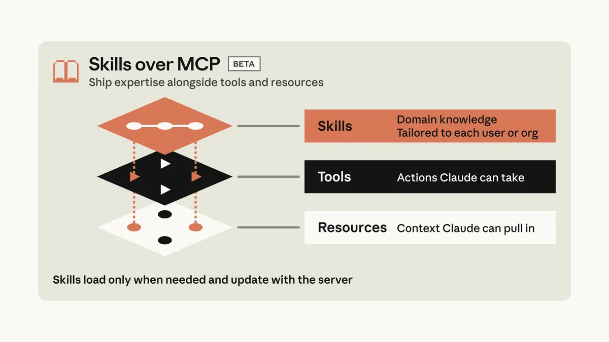
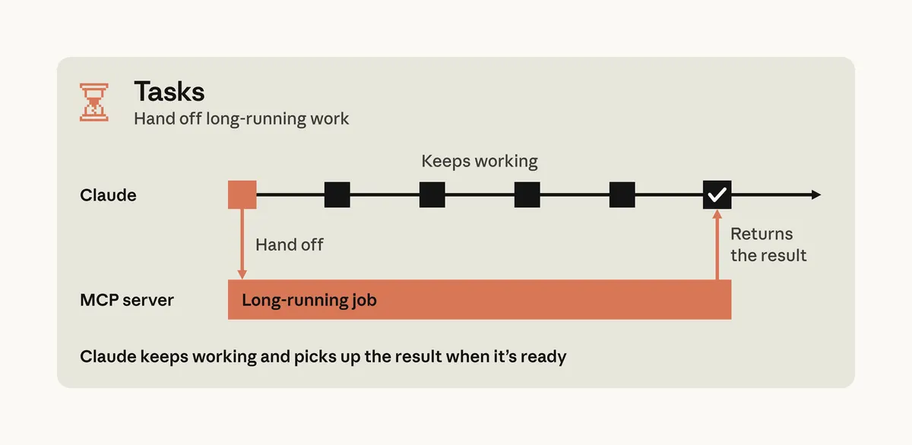

MCP 不再是工具清單：skills 帶知識，長任務搬到背景
導讀原文：官方產品公告，宣布 Skills over MCP 進入 public beta、Tasks 與 Elicitation 轉為正式可用、File Uploads 即將推出
MCP 伺服器可連 skills 一起發布，Claude 只在需要時載入；Tasks 與 Elicitation 轉為正式可用：長工作搬到背景，關鍵處停下來問人。
skills 補的是「怎麼做」
原文的框架是：Claude 現在對待一台 MCP 伺服器，更像對待另一個 agent——向它學習、委派工作、沿途交換輸入與檔案。
第一步是把「做法」也交付出來。tool 的名稱與描述只說明它做得到什麼，沒有交代某一類工作該怎麼處理。
Skills over MCP 因此在 tools 之外多開一個通道：伺服器可一併發布 skills，用來承接更長、多步驟的工作。
skill 的內容可以是某類工作的最佳實務、逐步流程，也可以是依個別帳號或組織客製的 playbook。
載入時機才是設計重點：Claude 只在需要時才載入 skill，伺服器因此能夾帶大量領域知識，同時讓常態上下文佔用維持在低檔。
skill 隨伺服器更新，開發者把工具與指引一起交付，使用者不必另外安裝任何東西。
同一個伺服器，不同客戶需要的做法並不一樣；skill 正好讓知識依帳號或組織分開帶。

首批採用者各自把自家專業度包成 skill，讓 Claude 接上後就有可遵循的做法。
四項並列，無先後順序；原文只列名單，未給成效數字
本站整理自原文敘述，非原文圖；原文未給這四家的排序、權重或量化成效，1–4 僅為編號。
可用範圍（public beta）：Pro、Max、Ultra 預設開啟，Claude 與 Claude Code 皆有；Team 需管理員啟用，Enterprise 即將支援。
長任務搬去背景，簽核留在人手上
原文的觀察是：production 裡的 agent 正在接下更長、後果更重的工作。
舊限制很硬：tool call 必須跑完，Claude 才能往下走。
Tasks 讓伺服器在背景執行耗時操作，甚至一整個 agent loop；Claude 繼續做別的事，結果好了再取。
原文的例子是 ZoomInfo：用它跑更深的客戶與聯絡人研究，過去要好幾輪 prompt 才做得完。
但長任務會撞到另一種風險：有些動作不該由伺服器自己決定，例如花錢或刪資料。
Elicitation 讓伺服器中途暫停，用表單或連結向使用者要一個確認，拿到後從原處繼續。
原文把兩件事放在同一個理由下：伺服器既要能跑長工作，也要能在關鍵處停下來問人。

三個具名例子都落在不可逆的動作上（編輯歸納）：Supabase 建付費專案前確認費用、跑破壞性 SQL 前先問。
Railway 在移除服務這類可能造成破壞的變更前詢問；GitHub 要求先輸入 repo 名稱，才讓 agent 刪除。
（編輯觀點：Tasks 與 Elicitation 要合起來看——少了中途暫停，背景長任務就是無人看管的破壞風險。）
File Uploads 補上最後一段：File Uploads 上線後，Claude 將可把 PDF、試算表、圖片直接交給伺服器，不經過上下文視窗。
三項能力的邊界不同
三項能力常被混為一談，其實各解一個問題：一個處理時間，一個處理權限，一個處理檔案。
| 能力 | 解決什麼 | 具名採用 | 原文狀態 |
|---|---|---|---|
| Tasks | tool call 不再阻塞，長工作與 agent loop 移到背景 | ZoomInfo：更深的客戶與聯絡人研究 | GA；Pro、Max、Ultra 已可用，Team／Enterprise 推出中 |
| Elicitation | 花錢、刪資料等動作前的使用者簽核 | Supabase、Railway、GitHub | GA；Claude 與 Claude Code 皆有，Pro、Max、Ultra 已可用 |
| File Uploads | 檔案走專用通道，不佔上下文視窗 | 原文未列 | 即將推出；含符合條件的 Team、Enterprise |
原文強調這些屬開放 MCP spec 及其 extensions，支援的伺服器在任何相容 client 都能用，不只 Claude。
（編輯觀點：這正是 MCP 與單一產品功能的差別——同一份 skill 或 Task 實作，換 client 不必重寫。）
兩年底座：規模、效率與授權
生態規模是底座：MCP 每月 SDK 下載逾 7 億次，Claude 的 MCP connector 逾 1 萬個。
效率是第一個變化。Tool search 只在需要時載入 tool 定義，多伺服器情境下可減少逾 85% 的佔用。
可規模化是第二個：最新 spec 是 stateless 的 2026-07-28 版，跨 Claude 產品支援，建置與維運都變簡單。
第三是授權與介面。Enterprise Managed Auth 讓管理員一次授權支援的伺服器，使用者之後自動連上。
MCP Apps 則把完整介面帶進 Claude，可以放在對話旁邊，也可以全螢幕。
（編輯觀點：四個變化指向同一件事——把維護責任往伺服器與 spec 收，client 端盡量保持一致。）
（編輯觀點：skills 才是這次真正的位置調整——伺服器從「提供動作」變成「連同做事方法一起交付」。）
（編輯觀點：代價是行為可能無感改變。skill 隨伺服器更新，使用者不必安裝，版本也不在自己手上。）
原文收在兩年：MCP 由 Agentic AI Foundation 託管，被形容為 agent 之間訊息與 orchestration 的基礎。
帶走三件事
skills 補的是做法，不是能力。工具描述再全，也說不清某類工作怎麼做。
長任務要離開對話迴圈。Tasks 讓伺服器背景跑，Claude 不必等。
簽核點要寫進流程。花錢與刪除先確認，比事後補救便宜。
同一主題的其他館藏
導讀為本站編輯內容（AI 摘解自原文與館藏重點，非官方文件）。引述數據出自原文；兩張官方示意圖為原文所有、本站自託管，其餘圖解（採用者並列）與表格為本站依原文文字整理，非原文圖。內容經對照原文的獨立事實審查後發布。